Cedar already had an integration with Highmark, an insurance company, that showed patients their HSA/FSA balance alongside their medical bill. The results were promising: a 33% relative increase in HSA/FSA payments. The problem was reach: It was limited to only a few healthcare providers and a fraction of patients who had Highmark HSA/FSA accounts.
To increase reach, we partnered with HealthEquity, the largest HSA administrator in the country at 22% of the market. I designed the E2E patient experience for the MVP and further enhancements to get it to GA-ready across Cedar's clientbase.
I love clicking a button to view my HSA balance before paying my bill. Before I would have to go to a separate site and log in, but this new feature makes it very convenient and easy.
PATIENT WITH AN HSA
I worked with my Product Manager and Engineering Manager to scope this MVP down to 3 core pieces.
{{ c.desc }}
Working with HealthEquity's engineering team, we were able to match their customers to our patients through SSN and other data. This allowed us to target patients who had an account and prompt them to activate their account in two main entrypoints: Bills home page and in billing notifications.
Entrypoint #1: Bills home page
Because we knew which patients had an account, we prominently displayed a callout to check their funds on the home page.
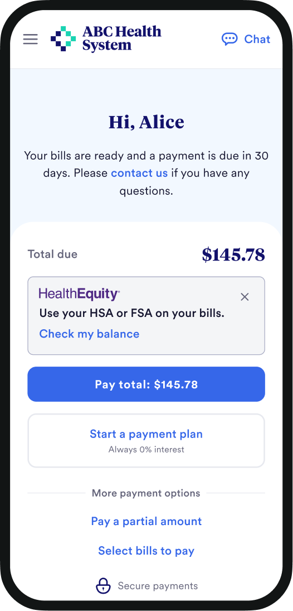
1. Activation prompt
Patients with funds are prompted to check it.
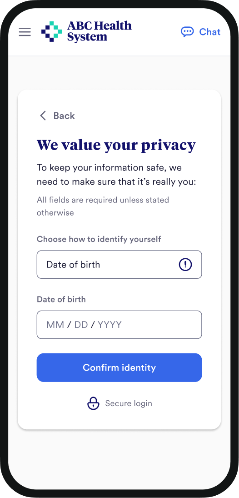
2. Login
Patients verify their identity to proceed.
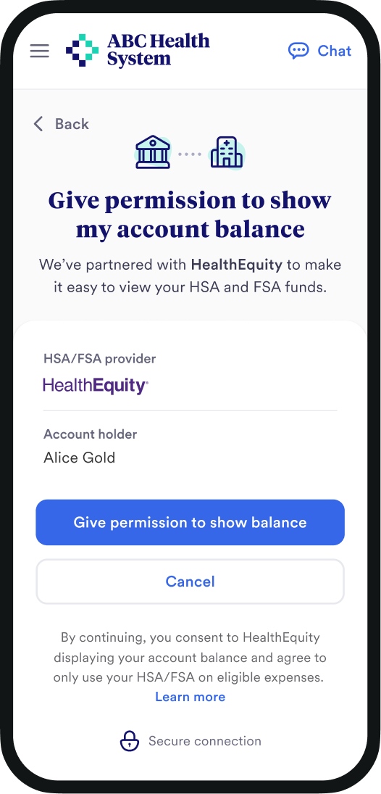
3. Getting consent
Explicit patient consent required to show balances.
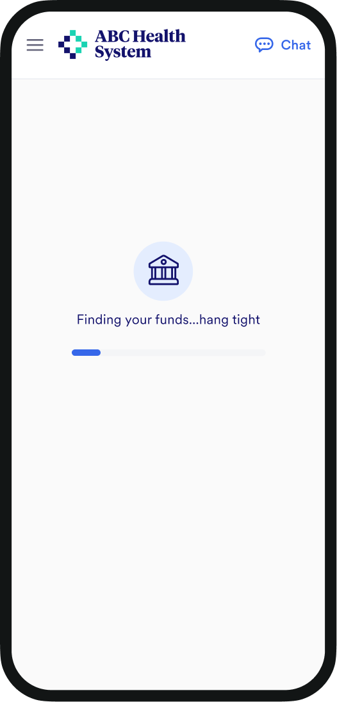
4. Finding funds
~1 sec loading state in case there are integration errors.
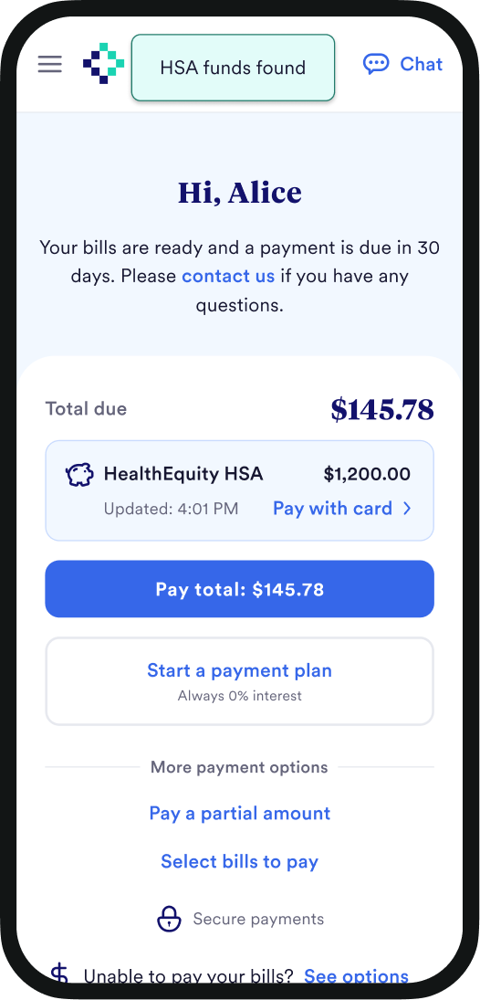
5. Funds connected!
Patients see how much their funds cover.
Entrypoint #2: First billing notification
Letting patients know about their HSA/FSA funds in the filling billing notification alleviated stress around affordability and primed them for the activation prompt on the home page.
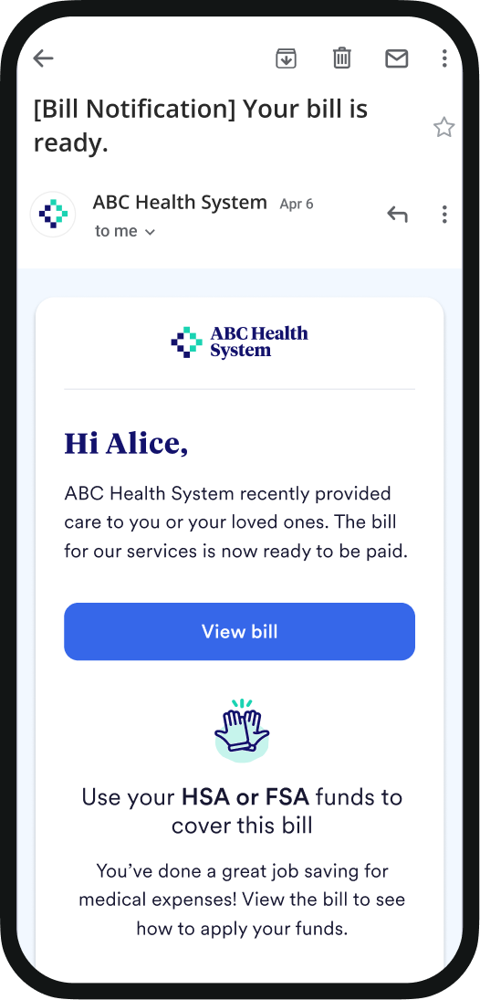
I designed the funds component to be flexible enough to handle different account and integration states. For example, if the connected account was a FSA, we prioritized showing the expiration. In another example, if the patient had not yet verified their identity, we prompted them to view their funds rather than show their account details.
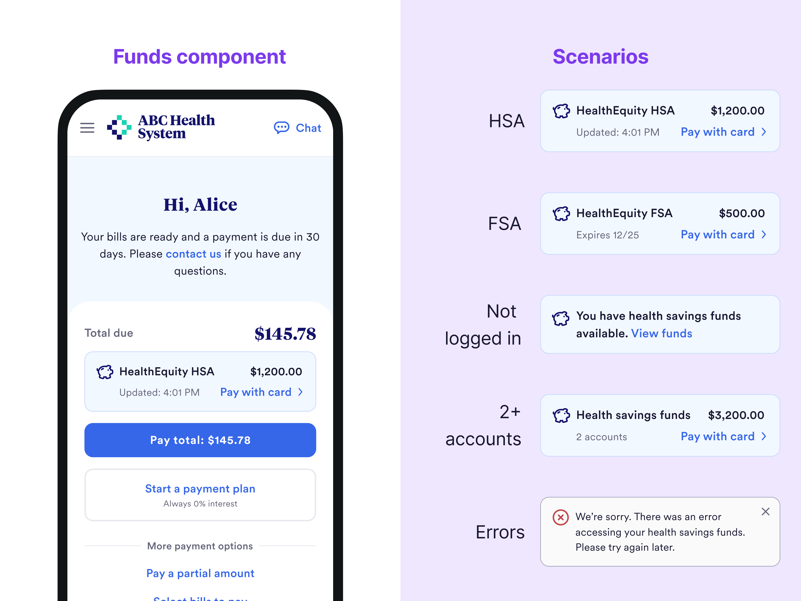
To get patients to use their HSA and FSA funds, we included callouts in their billing reminders.
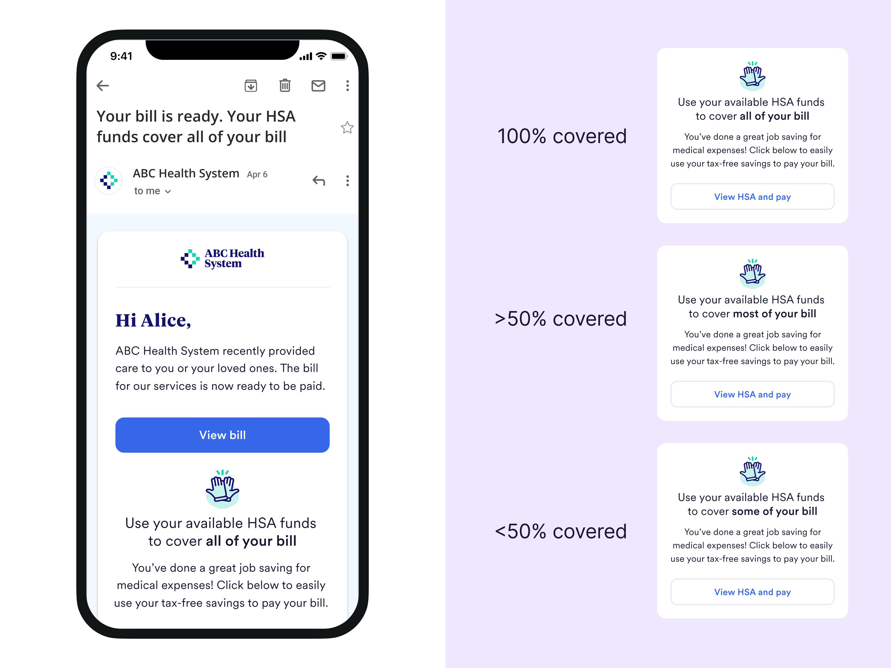
For HSA accounts, emails called out how much of the bill was covered by the funds.
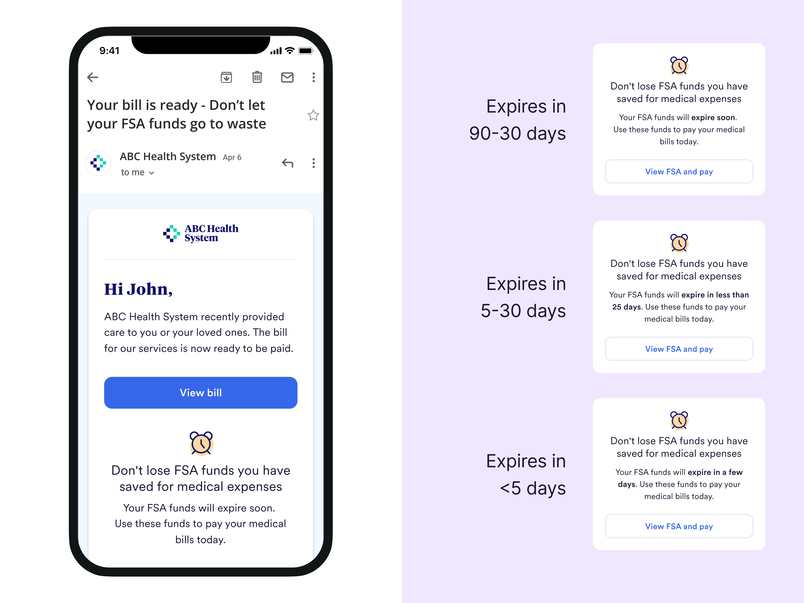
For FSA accounts, emails let patients know when their funds were expiring.
We launched a 50/50 A/B test with one of our clients: 19k patients in test, 19k in control.
Three threads I followed after launching with our beta client: Improving activation, increase FSA utilization, and support card nicknames.
Improving the activation callout on the home page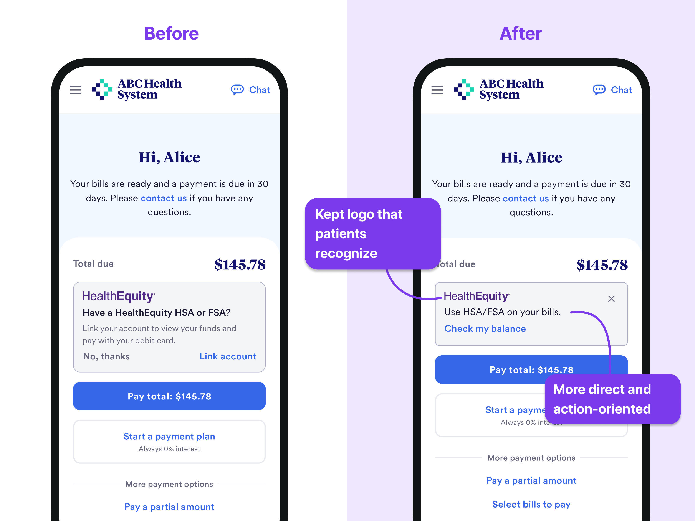
Improving FSA utilizationAs an FSA-user, I was inspired by emails I received from The FSA Store at the end of the year urging me to use my funds before they expire. I wanted to translate this sort of nudge into the healthcare billing context with the added benefit of actually knowing when funds expire through HealthEquity. To test this idea, I built the email using a low code internal email editor, got buy-in from a few client managers to launch this email as a one-off test, and collabed with a data scientist to interpret the results
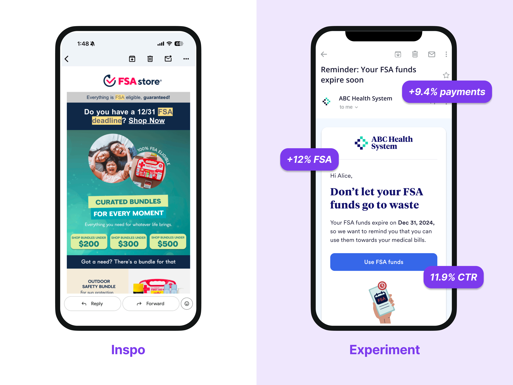
Card nicknamesPatient survey comments kept surfacing the same confusion: Patients with saved HSA/FSA cards didn't recognize them from the last 4 digits alone. Ideally, in the future, we would be able to pull these in automatically for patients through HealthEquity. In the meantime, I designed a way for patients to add a card nickname for saved payment methods.
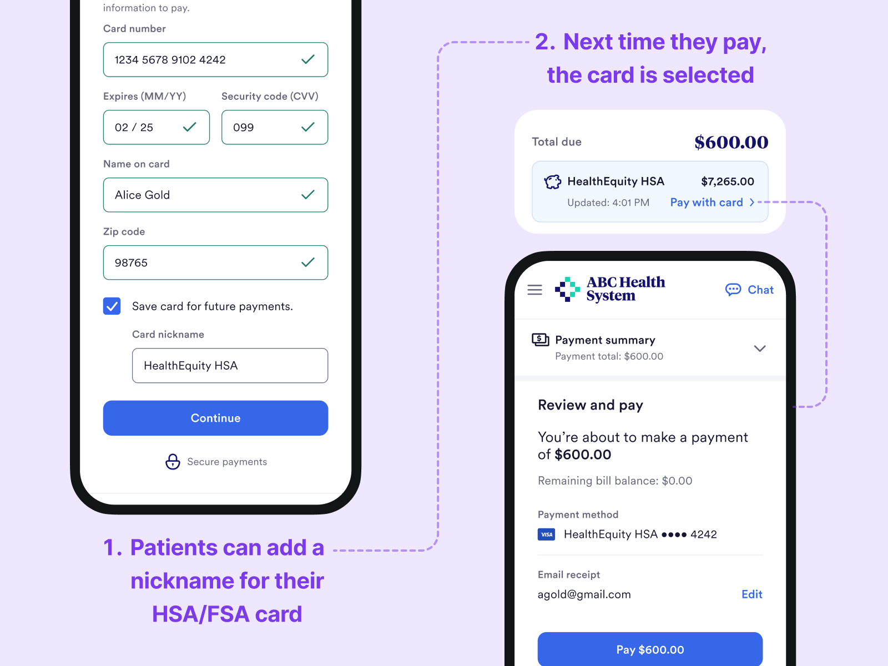
As we scaled HealthEquity and integrated with other partners, we needed to start thinking about our HSA/FSA feature set as a system.
Some integrations like Highmark were low friction for patients: Funds were automatically pulled in, no patient login or consent required. In these cases, HSA/FSA was prominent so patients could use their funds towards their bills. Plaid, on the other hand, was high friction: Patients needed to remember they had an account, find their bank, and login. In these cases, HSA/FSA was much lower in the app so that we would not distract patients who didn't have an account from paying. Establishing principles around HSA/FSA placement made it easier for us to add new integrations over time.
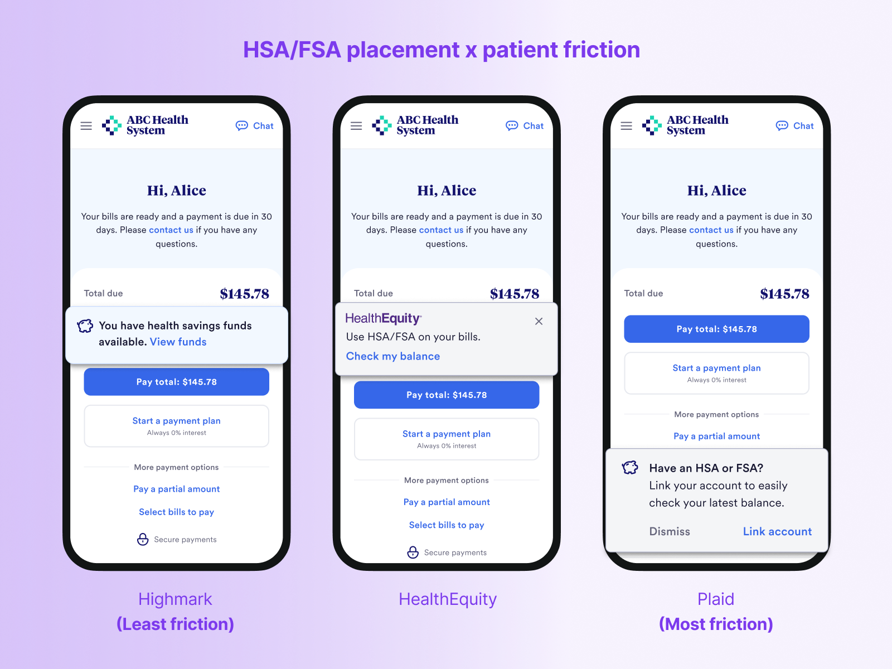
Legal & regulatory requirementsAs we scaled to more clients, Legal required disclosure around eligible expenses. This is because FSA/HSA plans can vary in terms of what funds could be used towards, so I designed this FAQ modal in the activation flow.
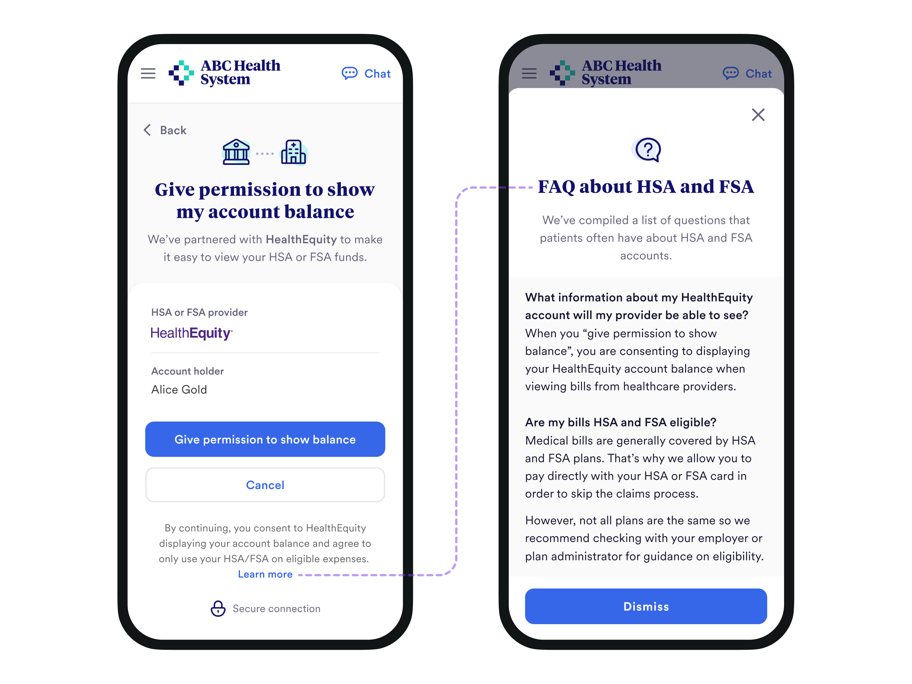
Allowing patients to revoke accessIf patients wanted to revoke access to their account, they would have to call in. Then on our end, an engineer would have to remove their account. To allow patients to self serve and reduce calls, I designed a revocation flow in settings.
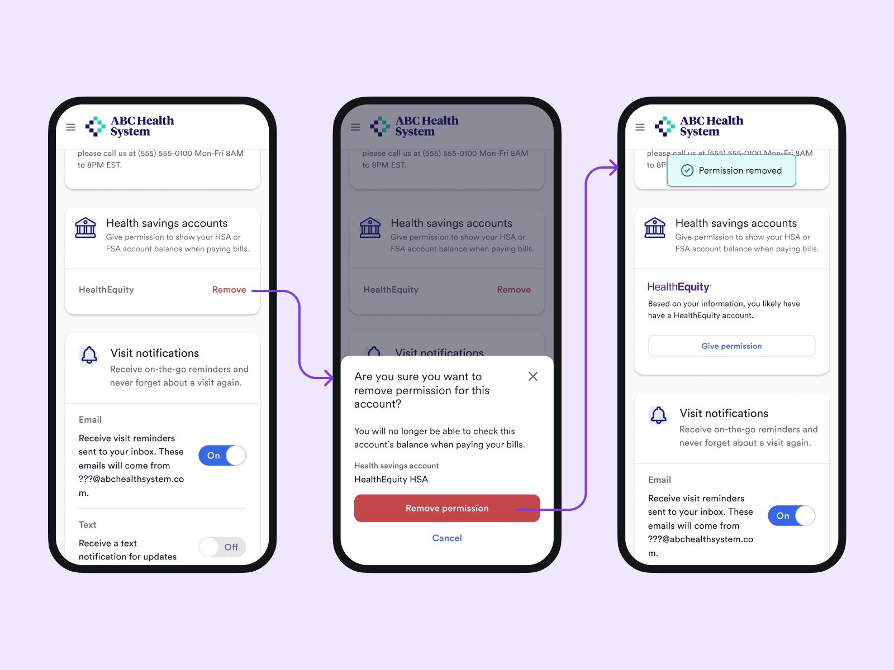
Due to the strong performance at our Beta client and additional iterations, we rolled out HealthEquity to the rest of our client base. To expand market share, we also integrated with other partners such as Plaid which was able to leverage a lot of the systems and design patterns established in this project.